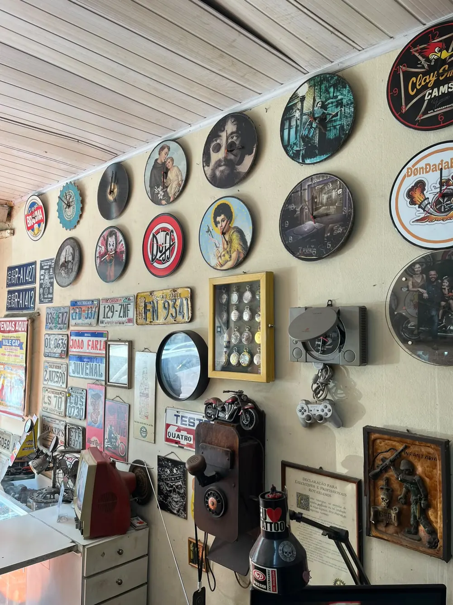
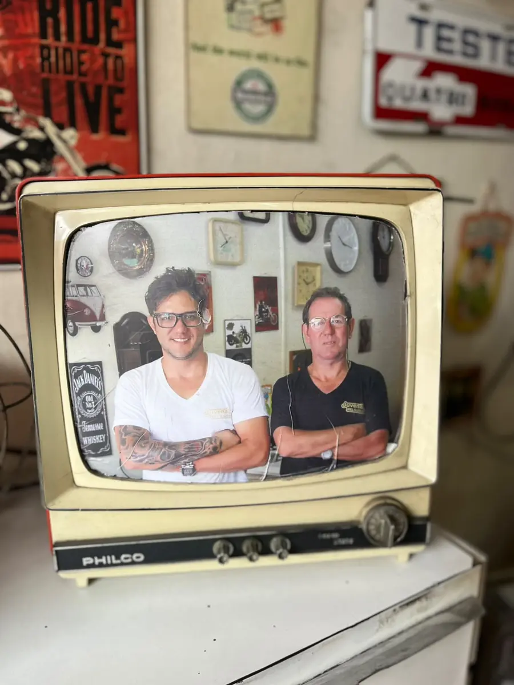

Conserto e manutenção
Relógios de pulso, de bolso e de parede: revisão, limpeza e ajuste para voltar a marcar a hora certa.

Caçapava · SP · Centro
Tradição e precisão que marcam o tempo.

sobre
Desde 1980, a Juvenal é uma relojoaria de bairro. Aqui o seu relógio é examinado com calma e consertado por quem gosta do ofício.
Fazemos conserto e manutenção de relógios de pulso, de bolso e de parede, troca de bateria e ajuste ou troca de pulseiras de couro, borracha e metal. Também vendemos relógios de pulso e temos peças antigas e de coleção.
Além do balcão de conserto, a loja virou um pequeno museu: relógios de vinil, TVs, rádios, telefones e placas de carro antigas enchem as paredes. Pode entrar, olhar com calma e perguntar sobre qualquer peça.
Não sabe se o seu relógio tem conserto? Traga até a loja para uma avaliação.
Ver horários e endereçoserviços
Relógios de pulso, de bolso e de parede: revisão, limpeza e ajuste para voltar a marcar a hora certa.
Bateria nova no relógio, com o fechamento feito do jeito certo.
Troca e ajuste de pulseiras de couro, borracha e metal.
Balcão cheio de modelos de pulso para todos os estilos. Venha ver de perto.
Relógios de bolso, peças antigas e itens de coleção que contam histórias.
Tem dúvida se o seu relógio tem conserto? Traga até a loja para uma avaliação.
Mais que uma relojoaria: um pequeno museu de relógios, TVs, rádios e placas antigas no Centro de Caçapava.
a loja
visite
| Segunda | 09:00 – 18:00 |
|---|---|
| Terça | 09:00 – 18:00 |
| Quarta | 09:00 – 18:00 |
| Quinta | 09:00 – 18:00 |
| Sexta | 09:00 – 18:00 |
| Sábado | 09:30 – 14:00 |
| Domingo | Fechado |